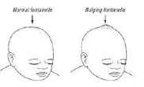

After completion of this session the participant should be able to:
Suspect meningitis in an infant with sepsis or if they present with the clinical symptoms or signs of meningitis: remember NYI often do not have neck stiffness.

| ANTIBIOTIC | EACH DOSE | FREQUENCY | ROUTE | |
|---|---|---|---|---|
| Inj. Penicillin and Gentamicin |
100,000iu/kg/dose | <7 days: 12 hrly | >7 days: 6 hrly | IV |
| LBW 3mg/kg/dose Term 5mg/kg/dose for first week Then 7.5mg/kg/dose thereafter |
<7 days: 24 hrly | >7 days: 24 hrly | IV | |
| OR | ||||
| Inj. Ceftriaxone | 100mg/kg/dose | <7 days: 24 hrly | >7 days: 24 hrly | IV |
Key fact for providers - Supportive care for NYI with meningitis
Reassess therapy based on culture and antibiotic sensitivity results if feasible. Continue IV antibiotics for at least 2 weeks (e.g. GBS) or 3 weeks (Gram negative bacteria) If the organism is not known, but it is known the baby had meningitis then the safest duration is to give 3 weeks to cover for the possibility of gram negative bacteria causing the meningitis. Measure the NYI head circumference every 3 days as an intracranial abscess or hydrocephalus may develop. If circumference is increasing do ultrasound scan. |